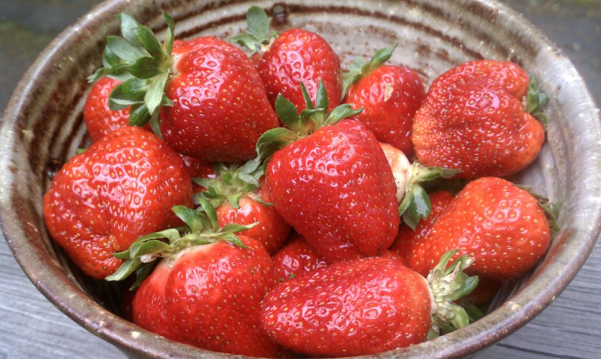

Strawberries

The garden strawberry is a widely grown hybrid species of the genus Fragaria, collectively known as the strawberries. It is cultivated worldwide for its fruit.
It is consumed in large quantities, either fresh or in such prepared foods as preserves, juice, pies, ice creams, milkshakes, and chocolates.